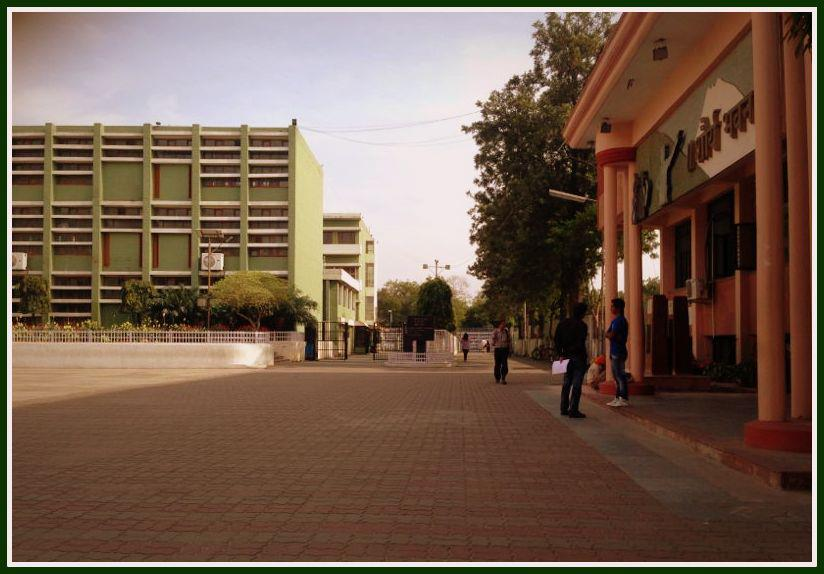
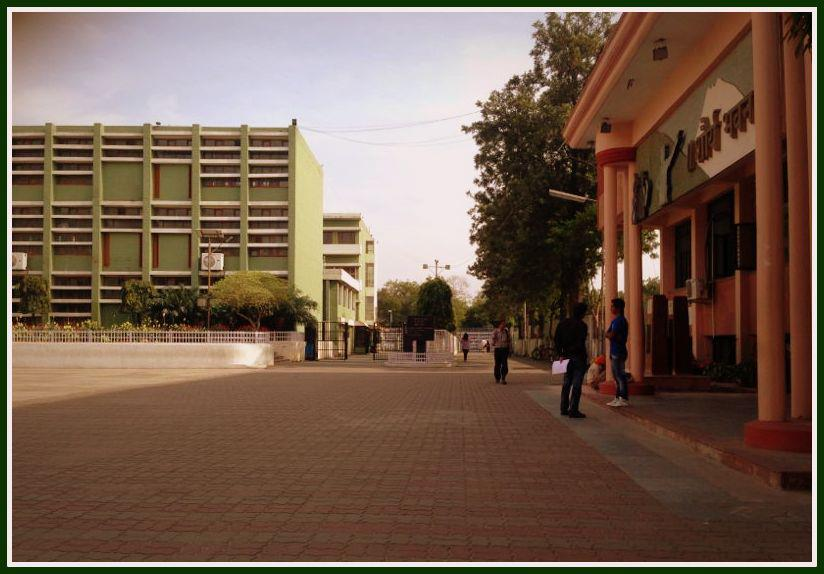

D.A.V. COLLEGE SECTOR -10 CHANDIGARH

 

Arts Department
The Department of Art History and Visual Arts in this University was established in 1962 and offers a post-graduate course (Semester System) and a Ph.D. programme in History of Art. Over the years it has emerged as an important centre of study and research in the region. This subject is offered only in a few universities in India and this department has made a significant mark by the way of academic contribution in terms of research and collaborative work. It is an excellent center for post-graduate studies and research with several facilities and resources that are available for the students and researchers to take benefit of. The departmental library and archival facilities such as, an image library, research journals and rare books on related subjects, are excellent and adjacent to the study area. The Master.s in History of Art is a programme structured to have international appeal as the course covers the history of art of Egypt, Middle East, Europe, America, South East Asia and Far East in addition to the history of Indian art and architecture. Because of this the department attracts students from different parts of the world.